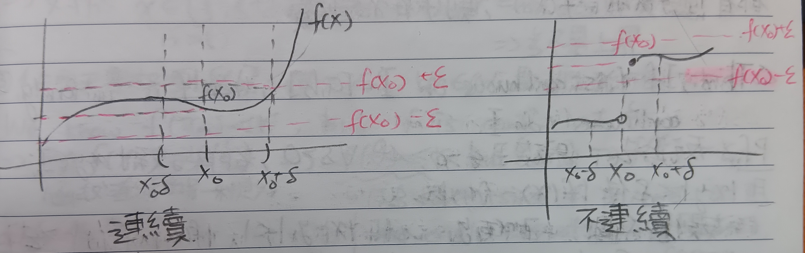
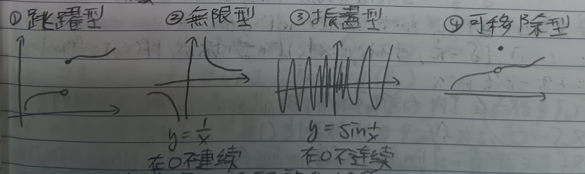
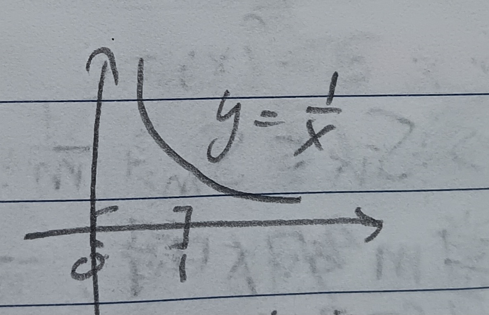

這份筆記是關於實數函數的各項性質。
連續性
定義 1：定義域與對應域 (Domain and Range)
我們說函數\(f(x)\)在\(\mathbb{R}\)上有定義域和對應域。即令\(S\)是實數集合，我們有 \[f(x):S\to\mathbb{R}\]
定義 2：連續 (Continuous)
給定實數函數\(f(x)\)。若\(\forall\epsilon>0,\exists\delta>0\) s.t. 當\(|x-x_0|<\delta\)時有\(|f(x)-f(x_0)<\epsilon|\)，則稱\(f(x)\)在\(x_0\)連續(見下圖1)
註記 2-1
若一函數\(f(x)\)在某點不連續，則可能有以下四種狀況(見下圖2)：
註記 2-2
可以看出連續性是一種局部的性質。
定義 2-3：在某區間連續 (Continuous on Intervals)
給定函數\(f(x)\)與區間\(I\)。若\(\forall x'\in I\)，\(f\)在\(x'\)上連續，則稱\(f\)在\(I\)上連續。
定義 2-4：連續的等價定義
若對於所有收斂到\(x_0\)的數列\(x_1,x_2,\cdots\to x_0\)都有\(\lim\limits_{n\to\infty}f(x_n)=f(x_0)\)，則\(f\)在\(x_0\)連續。
定義 3：一致連續 (Uniformly Continuous)
給定函數\(f(x)\)與區間\(I\)。若\(\forall\epsilon>0,\exists\delta=\delta(\epsilon)>0\)(\(\delta\)只和\(\epsilon\)有關) s.t. \(\forall x_0\in I\)，當\(|x-x_0|<\delta\)時都有\(|f(x)-f(x_0)|<\epsilon\)，則稱\(f(x)\)在\(I\)上一致連續。
例 3-1
令\(f(x)=3x+8\)，給定\(\epsilon>0\)，有\(|3x+8-(3x_0+8)|=3|x-x_0|\)。令\(\delta=\epsilon/3\)，可以知道\(f(x)\)在\(\mathbb{R}\)上一致連續。
例 3-2
令\(f(x)=x^2\)，給定\(\epsilon>0\)，我們希望\(|x^2-x_0^2|=|(x-x_0)(x+x_0)|<\epsilon\)。可以發現不管\(\delta\)怎麼取，一定有\(x\)和\(x_0\)使得\(|x+x_0|>\frac{\epsilon}{\delta(\epsilon)}\)。故\(f(x)=x^2\)在\(\mathbb{R}\)上並不一致連續。
定理 4
若函數\(f\)在區間\(I=[a,b]\)上連續，則\(f\)在\(I\)上一致連續。
證明：使用反證法。假設\(\exists\epsilon>0\) s.t. \(\forall\delta>0\)都能找到\(x,y\in I\) that \(|x-y|<\delta\)使得\(|f(x)-f(y)|\geq\epsilon\)。
則當\(\delta=1\)時，\(\exists x_1,y_1\) s.t. \(|x_1-y_1|<1\), \(|f(x_1)-f(y_1)|>\epsilon\)
當\(\delta=\frac{1}{2}\)時，\(\exists x_2,y_2\) s.t. \(|x_1-y_1|<\frac{1}{2}\), \(|f(x_1)-f(y_1)|>\epsilon\)
\(\cdots\)
當\(\delta=\frac{1}{n}\)時，\(\exists x_n,y_n\) s.t. \(|x_n-y_n|<\frac{1}{n}\), \(|f(x_n)-f(y_n)|>\epsilon\)(☆)
然而，由\(\{x_n\}\)全部落在\(I\)內知\(\{x_n\}\)有界，故其有收斂子序列\(\{x_{n_k}\}\)(這裡的定理4)，令它收斂到\(\xi\in I\)。又\(\delta\to 0\)，故\(\{y_{n_k}\}\)也收斂到\(\xi\) (\(|x_{n_k}-y_{n_k}|<\frac{1}{n_k}\))。又\(f\)在\(\xi\)連續，故(見上定義2-4) \[
\begin{aligned}
&\lim_{k\to\infty}f(x_{n_k})=f(\xi)=\lim_{k\to\infty}f(y_{n_k})\\
&\Rightarrow \lim_{k\to\infty}|f(x_{n_k})-f(y_{n_k})|=0
\end{aligned}
\] 故一定存在\(k'\)使得\(|f(x_{n_{k'}})-f(y_{n_{k'}})|<\epsilon\)。這和(☆)矛盾。故\(f\)在\(I\)中一致連續。QED
中間值定理
定理 5：中間值定理 (Intermediate Value Thoerem)
若函數\(f\)在區間\(I=[a,b]\)上連續，則令\(a,b\in I\), \(\eta\)為任意界在\(f(a)\)和\(f(b)\)之間的數，則存在一數\(\xi\in[a,b]\)使得\(f(\xi)=\eta\)。
證明：令\(\alpha=f(a),\beta=f(b)\)，給定\(r\)使\(\alpha<r<\beta\)。令\(S=\{x|x\in
I,f(x)<r\}\)，則我們知道以下幾件事：
1. \(S\)有界。這很明顯，因為\(S\subseteq I\)。由這裡的定理4知道\(S\)有最小上界，令其為\(\xi\)。
2. 如果\(\xi\in S\)，則\(f(\xi)<r\)。令\(\epsilon=\frac{r-f(\xi)}{2}>0\)。由於\(f\)在\(\xi\)連續，故存在\(\delta>0\) s.t. \(|x-\xi|<\delta\)時有\(|f(x)-f(\xi)|<\epsilon\)，故有 \[
\begin{aligned}
f(x)&<f(\xi)+\epsilon\;(f(x)\in(f(\xi)-\epsilon,f(\xi)+\epsilon))\\
&=f(\xi)+\frac{r-f(\xi)}{2}=\frac{r+f(\xi)}{2}<r
\end{aligned}
\] 故對於\(x\in(\xi,\xi+\delta)\)都有\(f(x)<r\) \(\Rightarrow\) \(x\in S\)且\(x>\xi\)，會發現\(\xi\)不是\(S\)的上界，矛盾。故\(\xi\notin S\)。
3. 給定無窮數列\(\{x_n\}\)，其中\(x_n\in S,\forall n\in\mathbb{N}\)且\(\lim\limits_{n\to\infty}x_n=\xi\)。我們知道\(f(x_n)<r\)，但\(f\)在\(\xi\)連續，故\(\lim\limits_{n\to\infty}f(x_n)=f(\xi)\)(見定義2-4)。若\(f(\xi)>r\)，則由於\(f\)在\(\xi\)連續，故存在\(\epsilon>0\) s.t. \(\forall x\in(\xi-\epsilon,x+\epsilon),
f(x)>r\)。但由\(x_n\)收斂到\(\xi\)知存在\(x_n\in(\xi-\epsilon,x+\epsilon)\)。故有\(f(x_n)>r\)，矛盾。所以應該有\(f(\xi)\geq r\)。但\(\xi\notin S\)，故\(f(\xi)=r\)。QED
極值定理
定理 6：極值定理 (Extreme Value Thoerem)
若\(f\)在\(I\)中連續，則\(f\)在\(I\)中存在最大值及最小值，意即
1.\(\exists \xi_0\in I\) s.t. \(\forall x\in I, f(x)\leq f(\xi_0)\)
2.\(\exists \xi_1\in I\) s.t. \(\forall x\in I, f(x)\geq f(\xi_0)\)
證明：底下分兩步驟證明。
1.
我們希望說明\(f\)在\(I\)中有界。令\(I=[a,b]\)，由定理4知\(f\)在\(I\)中一致連續。令\(\epsilon=1\)，則\(\exists \delta>0\) s.t. 當\(|x-y|<\delta\)時都有\(|f(x)-f(y)|<1\)。故\(f(x_0)-n<f(x)<f(x_0)+n\)，\(f\)在\(I\)上有界(見下圖3)。故\(f\)有最大下界和最小上界。令\(S=\{f(x)|x\in[a,b]\}\)。
2. 我們希望說明有\(\xi\in
I\)使\(f(\xi)\)是\(f\)在\(I\)中的最小上界，令其為\(M\)。(這裡只證明上界，下界同理)故對於所有\(x\in I\)，有\(f(x)\leq M\)。給定一個數列\(\{\xi_n\}\subseteq I\)，其中\(\xi\)是\(\{\xi_n\}\)的極限點，令\(f(\xi_n)\to M\)。
1) 若\(M\in S\)，則原題得證。(\(\xi\)是\(\xi_n\)的極限點，則由\(f\)連續知\(f(\xi)=M\)(見上定義2-4))
2) 若\(M\notin S\)，則由\(f\)連續且存在\(\{x_n\}\)的子序列\(\{x_{n_k}\}\)使得\(x_{n_k}\to\xi\in I\)知\(f(\xi)=M\)，這和\(M\notin
S\)矛盾。QED
註記 6-1
如果像\(f(x)=\frac{1}{x}\)這樣不連續，則在\(I=[0,1]\)上，極值定理就不會成立(見下圖4)。
歐拉數
定義 7：歐拉數 (Euler Number)
即 \[e=1+\frac{1}{1!}+\frac{1}{2!}+\frac{1}{3!}+\cdots\]
定理 8
\(e=1+\frac{1}{1!}+\frac{1}{2!}+\frac{1}{3!}+\cdots\)收斂。
證明1：令\(S_n=1+\frac{1}{1!}+\frac{1}{2!}+\frac{1}{3!}+\cdots+\frac{1}{n!}\)。我們顯然知道\(S_n\)單調遞增。如果我們能證明\(S_n\)有界的話就有\(S_n\)收斂了(見這裡的定理6)。
我們知道\(\frac{1}{3!}\leq\frac{1}{2\times 2}\),
\(\frac{1}{4!}\leq\frac{1}{2\times 2\times
2}\)，故 \[1+\frac{1}{1!}+\frac{1}{2!}+\frac{1}{3!}+\cdots\leq
1+1+\frac{1}{2}+\frac{1}{4}+\frac{1}{8}\leq 3\] 於是，\(S_n\)有界。QED
證明2：考慮\(n>m\)，\(S_n\)定義同上。有 \[ \begin{aligned} S_n&=S_m+\frac{1}{(m+1)!}+\cdots+\frac{1}{n!}\\ &=S_m+\frac{1}{(m+1)!}\left(1\frac{1}{m+2}+\frac{1}{(m+2)(m+3)}+\frac{1}{(m+2)(m+3)(m+4)}+\cdots+\frac{1}{(m+2)\cdots n}\right)\\ &\leq S_m+\frac{1}{(m+1)!}\left[ 1+\frac{1}{m+1}+\frac{1}{(m+1)^2}+\cdots+\frac{1}{(m+1)^{n-1}}\right]\\ &\leq S_m+\frac{1}{(m+1)!}\left(\frac{1}{1-\frac{1}{m-1}}\right)\\ &=S_m+\frac{1}{m}\times\frac{1}{m!} \end{aligned} \] 故有\(S_n\leq S_m+\frac{1}{m}\cdot\frac{1}{m!}\) i.e. \(|S_n-S_m|\leq\frac{1}{m}\cdot\frac{1}{m!}\)。當\(m\)夠大時，\(\frac{1}{m}\cdot\frac{1}{m!}\)可以小於任意小的\(\epsilon\)，故\(\{S_n\}\)是柯西序列，\(\{S_n\}\)收斂。QED
定理 9
歐拉數\(e\)是無理數。
證明：若\(e\)是有理數，則令\(e=\frac{P}{m}\), \(m>2\)(\(2<e<3\)，可以假設\(m>1\))。故有 \[S_m<\frac{P}{m}\leq S_m+\frac{1}{m}\cdot\frac{1}{m!}\] (\(S_n<S_m+\frac{1}{m}\cdot\frac{1}{m!},\forall n\)，故\(e<S_m+\frac{1}{m}\cdot\frac{1}{m!}\))故有 \[m!S_m<P(m-1)!<m!S_m+\frac{1}{m}<m!S_m+1\] 然而\(P(m-1)!\)是整數，故上式代表\(m!S_m\)和\(m!S_m+1\)這兩個連續整數之間有一個整數\(P(m-1)!\)。矛盾。故\(e\)是無理數。QED